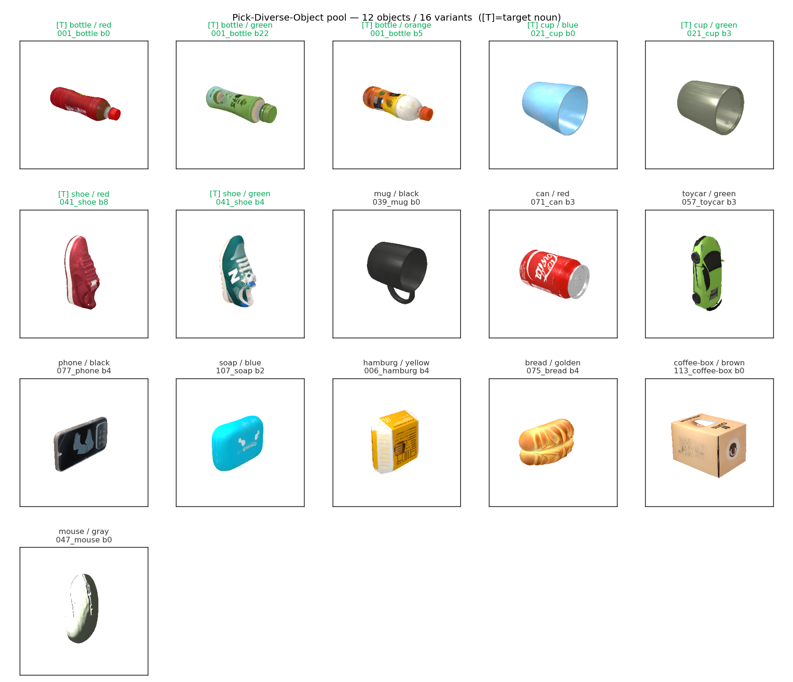
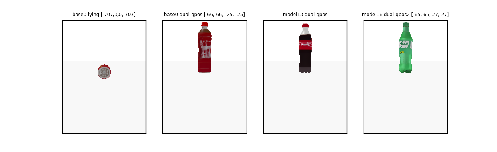

RoboTwin-IF 复刻 · feature-04
指令用「颜色 + 名词」点名桌上一个物体，机器人单臂把它拿起——诊断 VLA policy 是否真的读指令选对物体，而不是看图做默认动作。
在 RoboTwin 2.0 上新建一个「颜色+名词 grounding」IF 任务：12 品类池采 4 个、指令点名 1 个、单臂拿起。含 oracle 专家演示 + 评测 harness。
Layer A（指令路由，纯 python 9/9）+ Layer B（判定正反例，仿真 16/16）+ collect_data→reporter 全流程跑通。
核心 IF 诊断成立（位置随机、判定 target-specific）；12 品类等概率目标；瓶子 50/50 站/躺。oracle 成功率 82.8%。
「颜色最干净的变体未必能抓」；「站立瓶子」一度误判做不到，参考原生 pick_dual_bottles 才解决。
RoboTwin-IF 基准诊断 VLA policy 是否真按语言指令控制动作，而非退化成「看图选默认动作」。Pick-Diverse-Object 专测 target-object grounding：场景里 4 个物体，指令用「颜色+名词」（如 "the blue cup"）点名 1 个，其余 3 个是真实可抓的干扰项——policy 必须读懂指令才能选对。
深读：understanding.md（问题/需求维度）。
RoboTwin 的采集/评测驱动靠 importlib.import_module(f"envs.{task_name}") 按名字发现任务。我们把一个继承 Base_Task 的 env + 指令 json symlink 进 submodule，就接进了这条流水线——零改 submodule 源码。
深读：architecture.md（含 mermaid 图 + 逐框说明）。
以下视频是 collect_data 采集出的 oracle 专家演示（aloha-agilex），随 notes 目录离线可放。
[0.66,0.66,-0.25,-0.25]（参考 pick_dual_bottles）+ 世界系抬起。

[0.66,0.66,-0.25,-0.25]（右三格）让高瘦瓶子真·直立站住，而我最初试的 qpos 会倒。左一是躺放（端面朝外）。{A}="the blue cup"（不含 /）走 native 的字面替换分支，而非随机物体描述——因为随机描述不保证含颜色、不保证能区分目标。seed % 12 而非 rng 抽取：default_rng(seed).integers 对低连续 seed 聚簇（seed 0/2/3/4/8/10 全 → shoe/red），小规模采集直接偏斜。seed%N 又轻又对。021_cup/base8 没有抓取标注、grasp 失败——三个信号（stable / 有 mesh / 有抓取标注）要分别核查。pick_dual_bottles，去查发现正解 qpos + 世界系抬起（move_axis="arm" 对侧抓无效，会平移不升起）。深读：decisions.md（轻量 ADR + 改动量级批判 + 设计模式）。
| 项 | 状态 | 说明 |
|---|---|---|
| Layer A 指令路由 | ✓ 9/9 | seen∩unseen=∅、{A} 路由、字面量注入成句（纯 python） |
| Layer B 判定正反例 | ✓ 16/16 | 12 类目标 oracle 都能抓 + 同色/同名/未握住三反例判 False |
| operate_tabletop 回归 | ✓ 7/7 | 共用 helper 重构后无退化 |
| collect_data → reporter | ✓ 跑通 | oracle 82.8%（24 kept / 29 tries）；指令真实渲染正确 |
| 目标 & 干扰分布 | ✓ 均匀 | 12 品类 tried 均匀、干扰均匀 |
| 颜色 grounding 强度 | ⚠ TODO | 均匀采样下颜色必要仅 ~10-15% episode，偏名词 grounding |
| 站立瓶子避障 | ⚠ TODO | 侧抓不避障，会撞开干扰物 |
| Layer C 区分度 | ✗ 未做 | 本轮不含瞎猜/作弊 baseline 对照 |
0.02 / 各物体抓取参数类推自原生任务，论文未确认。# 1. 桥接（把 task 文件 symlink 进 submodule） bash bridge_tasks.sh # 2. Layer A（纯 python，秒级） conda run -n RoboTwin python tests/pick_diverse_object/test_instructions.py # → 9/9 # 3. Layer B（仿真，~10 分钟） conda run -n RoboTwin python tests/pick_diverse_object/test_check_success.py # → 16/16 # 4. 数据采集 + 成功率报告 cd third_party/robotwin && python script/collect_data.py pick_diverse_object pdo_bench cd - && python tools/report_pick_diverse_object.py --collection \ third_party/robotwin/data/pick_diverse_object/pdo_bench # 渲染 12 物体池快照（颜色核校证据） conda run -n RoboTwin python tools/render_pick_pool_snapshots.py
更深的实现/决策细节见同目录 understanding.md · architecture.md · decisions.md；权威设计文档见主仓库 docs/features/04-Pick-Diverse-Object.md。
RoboTwin-IF · Pick-Diverse-Object · 生成于 2026-08-24 · 证据随 notes/ 目录离线可放